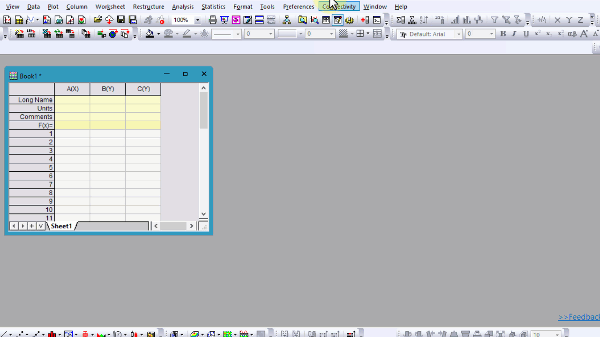

Letztes Update: 12.06.2024
Hinweis: Origin bietet Anwendern die Möglichkeit, sich wiederholende Aufgaben zu automatisieren, ohne dafür einen Code zu benötigen. Während Programmierung nicht notwendig ist, um den Leistungsumfang von Origin voll nutzen zu können, wendet sich diese Seite an Anwender, die sich für die Programmierfunktonen von Origin interessieren.
Origin ermöglicht Anwendern, komplexe Befehle und Funktionen über Bedienüberflächen und Dialoge auszuführen und das ganz ohne Programmierung. Es wurde jedoch als voll programmierbare Software entwickelt und enthält den integrierten Support für eine Vielzahl von leistungsstarker Sprachen.
Mit den Programmierfunktionen können Anwender ihre Arbeitsabläufe benutzerdefiniert anpassen, automatisieren und teilen. Einige allgemeine Anwendungen sind:
Aufgrund der Anzahl von Sprachen, die parallel in Origin ausgeführt werden, stehen Anwendern eine Vielzahl von Hilfsmittel zur Verfügung, um den zugrunde liegenden Code, die Befehle und Skripte in Origin anzuzeigen. Es sollte erwähnt werden, dass die auf dieser Seite erläuterten Funktionen primär verwendet werden, um auf LabTalk-Skript, einschließlich X-Funktionen, zuzugreifen.
Anwender können auf die meisten Menüelemente, Symbolleistenschaltflächen und Minisymbolleistenfunktionen klicken, während Sie die Tasten Strg + Shift gedrückt halten, um (1) das entsprechende Skript im Code Builder anzuzeigen und (2) Befehle und andere identifizierende Informationen im Skriptfenster zu dumpen. Ein kurzes Beispiel hierfür können Sie auf unserem YouTube-Kanal sehen.
Origin kann das Skriptfenster verwenden, um Befehle, Skripte und Fehlermeldungen anzuzeigen, die verarbeitet werden, wenn Anwender der Wert der ECHO-Variable ändern. Standardmäßig ist ECHO auf Null gesetzt, um die Anzeige der Befehle zu deaktivieren.
Um echo zu aktivieren, geben Sie echo = Zahl im Skriptfenster ein. Zahl kann eine der folgenden Optionen sein:
| Zahl | Aktion |
|---|---|
| 1 | Befehle anzeigen, die einen Fehler erzeugen |
| 2 | Skripte anzeigen, die zu einer Warteschlange zur verzögerten Ausführung gesendet wurden |
| 4 | Skripte anzeigen, die Befehle enthalten |
| 8 | Skripte anzeigen, die Zuweisungen enthalten |
| 16 | Makros anzeigen |
ECHO kann auf eine beliebige Summe dieser Zahlen gesetzt werden, um die Optionen zu kombinieren. Wenn zum Beispiel echo = 7;, zeigt Origin (1) Befehle an, die einen Fehler erzeugen, (2) Skripte, die zur Warteschlange gesendet wurden, und (4) Skripte, die Befehle enthalten. Wenn echo = 31;, zeigt Origin eine Kombination aller fünf Optionen an, die in der obigen Tabelle aufgelistet sind. 
Anwendern wird nahegelegt, die Variable auf echo = 0; zurückzusetzen, wenn Sie fertig sind.
Ein kurzes Beispiel zur Verwendung von ECHO ist in unserer Dokumentation zu finden.
Ein sehr starkes Hilfsmittel zum Automatisieren der Verarbeitung und Analyse ist der Befehl Skript erzeugen, den Sie in den meisten X-Funktionsdialogen über das Ausklappmenü oben im Fenster finden. Hier sind viele Aktionen für Arbeitsblätter und Diagramme während der Analyse und Visualisierung enthalten.
Diese Funktion wird verwendet, um auf die zugrunde liegenden X-Funktionen in Origin zuzugreifen.
|
Hinweis:
Die Systemvariable @GAS steuert, wie viele Informationen beim Verwenden der Funktion Skript erzeugen angezeigt werden. |
Sie finden ein kurzes Tutorial in unserer Dokumentation.
Origin verfügt über mehrere Bedienoberflächen, in die Anwender Code eingeben können, um ihre Arbeit zu automatisieren oder benutzerdefiniert anzupassen: